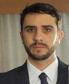

Emiliano Agustín Fontán Battisti

Formación académica
- 2010 - 2017: Ingeniería Biomédica
- Facultad de Ciencias Exactas Físicas y Naturales Universidad Nacional Córdoba.
- 2014-2015: Intercambio Académico en “Ecole Centrale Marseille” - Beca ARFITEC
- Especialidad: Señales, Imágenes y Comunicación. Marseille Francia.
- 2004 - 2009: Bachillerato en ciencias sociales con orientación en humanidades
- Instituto Nuestra Señora del Rosario. Bialet Massé Córdoba.
Experiencia profesional
- 2016 - Actualidad: Especialista de Producto
- Tecme SA - Córdoba, Argentina.
- 2014-2018: Co-fundador y MKT manager
- Atlas JE - Córdoba, Argentina.
- 2015: Pasantía de investigación Laboratorio de Psicología Cognitiva
- Universidad de Aix-Marseille, Marsella, Francia.
Intereses
Tengo interes por las ciencias médicas y los analisis de datos de productos médicos relacionados, en
lineas
generales me gusta realizar la recopilacion de información sobre el mercado de productos médicos y obtener de
ellos informacion relevante para el desarrollo de negocios.
Amplia experiencia en atendimiento a clientes, solucionado problemas presentes en forma rápida y
efectiva,
manteniendo siempre la seguridad y calidad del producto.
No tengo disponibilidad para recolación.
Contacto
Si quieres acceder a mi informacion de contacto o contactarme, por favor presiona AQUI